HÀNH TRÌNH TRẢI NGHIỆM & KỸ NĂNG SỐ HỌC THUẬT
PHẠM QUANG ĐỨC ANH
Sinh viên Dược K11 • VNU University of Medicine and Pharmacy
LỜI MỞ ĐẦU
PHẠM QUANG ĐỨC ANH
Sinh viên Dược K11
6
BÀI TẬP
8
MỤC RUBRIC
25
TIÊU CHÍ
- MSSV: 22100197
- +(84) 948 203 936
- 22100197@vnu.edu.vn
- VNU-UMP, Cầu Giấy, Hà Nội
- https://lovanlamthon2002-commits.github.io/My-Protfolio/
MỤC LỤC PORTFOLIO (MINI-TOC)
Chào mừng bạn đến với Portfolio Kỹ năng số của tôi. Đây là nơi lưu giữ những dấu ấn trên hành trình học tập và phát triển năng lực số, được xây dựng từ các bài tập, dự án và trải nghiệm thực tế liên quan đến công nghệ, quản trị dữ liệu và trí tuệ nhân tạo.
Trong thời đại chuyển đổi số của ngành y tế, năng lực số không chỉ là một kỹ năng bổ trợ mà còn là nền tảng quan trọng đối với Dược sĩ tương lai. Thông qua việc ứng dụng công nghệ, dữ liệu và AI, tôi hướng đến việc kết nối kiến thức chuyên môn với thực tiễn lâm sàng.
MỤC TIÊU PORTFOLIO
Minh chứng về năng lực công nghệ được hệ thống hóa thông qua 6 module học thuật, đồng thời lưu trữ các sản phẩm số cá nhân nhằm hỗ trợ chia sẻ, hợp tác và phát triển năng lực trong bối cảnh chuyển đổi số của ngành y tế.
Bản thân & Chuyên ngành
PHẠM QUANG ĐỨC ANH, sinh viên Dược K11 tại Trường Đại học Y Dược, Đại học Quốc gia Hà Nội (VNU-UMP).
Lĩnh vực quan tâm
Y học số, trí tuệ nhân tạo (AI/Machine Learning) trong sàng lọc & thiết kế dược chất, tự động hóa lâm sàng bệnh viện.
Kỹ năng cốt lõi
Lưu trữ khoa học, truy vấn dữ liệu y học nâng cao, Prompt CLEAR/CRAC, cộng tác trực tuyến trực quan, sáng tạo nội dung số AI.
BỘ CHECKLIST PORTFOLIO NĂNG LỰC SỐ (VNU1001)
Đối chiếu Rubric — Cấu trúc Portfolio · 0/4 tiêu chí
Thiết kế & Cấu trúc Portfolio
MỨC 4 — 3 ĐIỂMTrọng tâm: Trải nghiệm người dùng (UX) và tính chuyên nghiệp.
0/4 tiêu chí đã đối chiếu
BÀI TẬP THỰC HÀNH
Hệ thống 6 bài tập lớn rèn luyện năng lực số chuẩn y khoa được thực
hiện chi tiết theo quy trình
nghiên cứu học thuật.
BẢN ĐỒ TIẾN ĐỘ RUBRIC (8 MỤC)
Tự đánh giá toàn học phần · 0/25 tiêu chí (0%)


Bài tập 1 - Chương 1: Quản trị Hệ
điều hành & Thao tác
Tệp tin
BỘ CHECKLIST PORTFOLIO NĂNG LỰC SỐ
Đối chiếu Rubric — Bài 1: Quản trị Hệ điều hành & Tệp tin · 0/2 tiêu chí
MỤC LỤC - QUY TRÌNH 12 BƯỚC
MỤC TIÊU BÀI TẬP
Làm chủ giao diện Windows và File Explorer, thiết lập và chuẩn hóa thư mục lưu trữ số học thuật một cách khoa học, hệ thống.
QUY TRÌNH THỰC HIỆN CHI TIẾT
Nhấn tổ hợp phím Windows + E hoặc nhấp vào biểu tượng thư mục màu vàng.
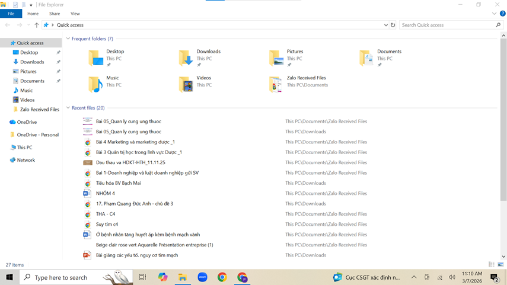
Ở cột bên trái, nhấp vào This PC, sau đó nhấp đúp vào một ổ đĩa không phải ổ hệ thống (ví dụ: ổ D: hoặc E:). Nếu chỉ có ổ C:, hãy vào thư mục Documents.
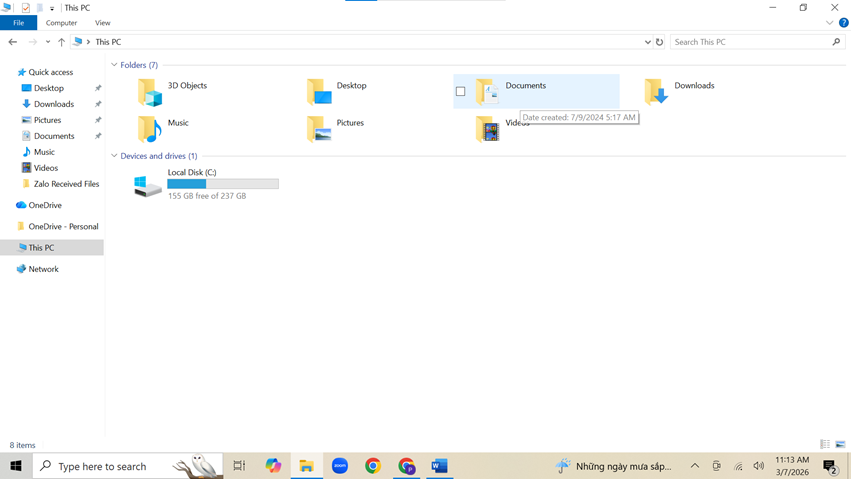
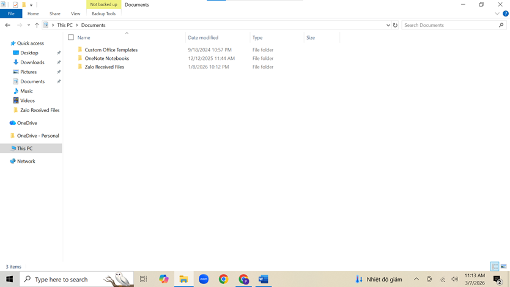
Nhấp chuột phải vào một khoảng trống -> chọn New -> Folder. Đặt tên thư mục là ThucHanh_hotensinhvien (ví dụ: ThucHanh_NguyenVanA). Nhấn Enter.
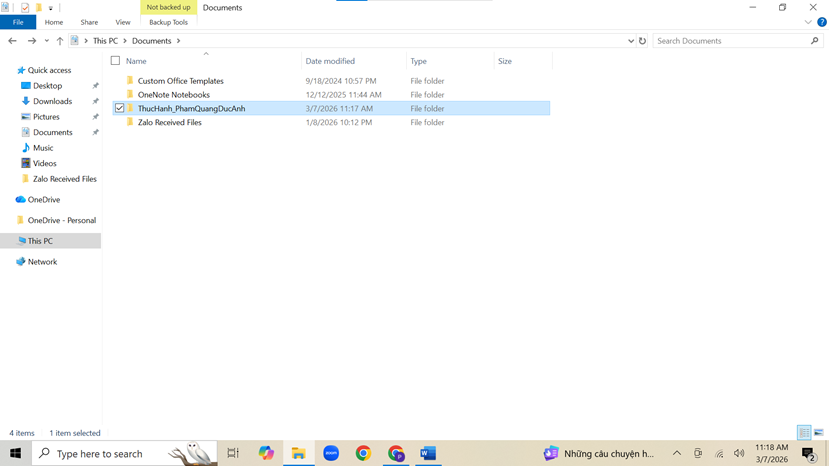
Nhấp đúp vào thư mục ThucHanh_NguyenVanA.
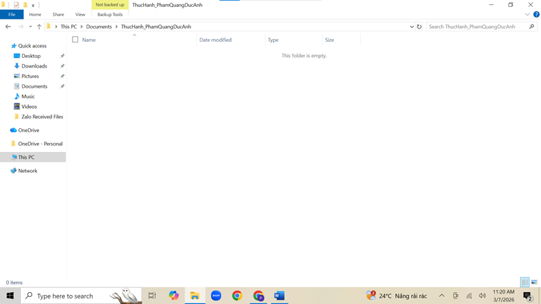
Nhấp chuột phải vào khoảng trống -> New -> Text Document. Đặt tên là GhiChu.txt. Nhấn Enter.
Nhấp chuột phải vào tệp GhiChu.txt -> chọn Rename. Đổi tên thành GhiChuQuanTrong.txt. Nhấn Enter.
Trong thư mục ThucHanh_NguyenVanA, nhấp chuột phải -> New -> Folder. Đặt tên là TaiLieu.
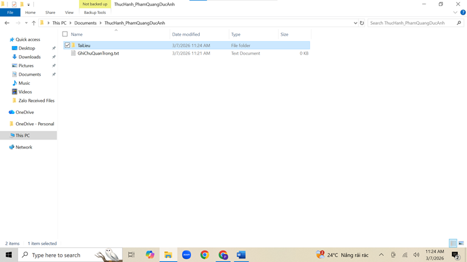
- Nhấp chuột phải vào tệp GhiChuQuanTrong.txt -> chọn Copy (hoặc
chọn tệp rồi nhấn Ctrl + C).
- Nhấp đúp vào thư mục
TaiLieu, nhấp chuột phải vào khoảng trống bên trong -> chọn
Paste (hoặc nhấn Ctrl + V). Bây giờ bạn có một bản sao của tệp
trong thư mục TaiLieu.
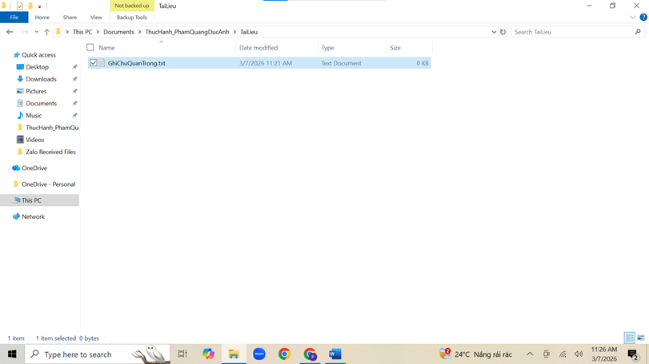
- Quay lại thư mục ThucHanh_NguyenVanA. Tạo một tệp mới tên là
DiChuyen.txt.
- Nhấp chuột phải vào tệp DiChuyen.txt -> chọn Cut (hoặc chọn
tệp rồi nhấn Ctrl + X).
- Nhấp đúp vào thư mục TaiLieu, nhấp chuột phải vào khoảng trống
-> chọn Paste (hoặc nhấn Ctrl + V). Tệp gốc đã biến mất khỏi vị
trí cũ và chỉ còn ở vị trí mới.
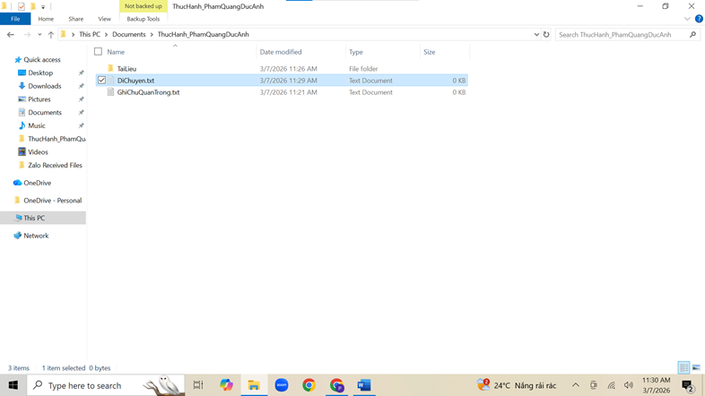
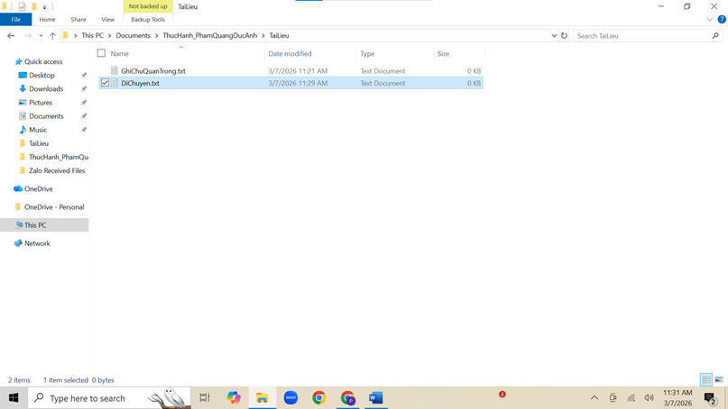
Trong thư mục TaiLieu, nhấp chuột phải vào tệp GhiChuQuanTrong.txt -> chọn Delete. Tệp sẽ được chuyển vào Thùng rác (Recycle Bin).
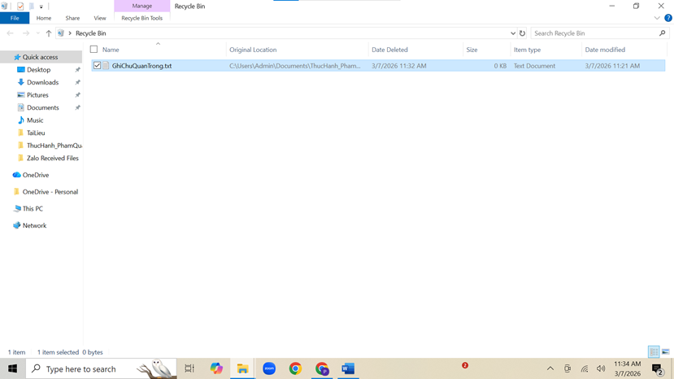
Chọn tệp DiChuyen.txt, nhấn giữ phím Shift và nhấn phím Delete. Một cảnh báo sẽ hiện ra. Nếu đồng ý, tệp sẽ bị xóa vĩnh viễn mà không qua Thùng rác.
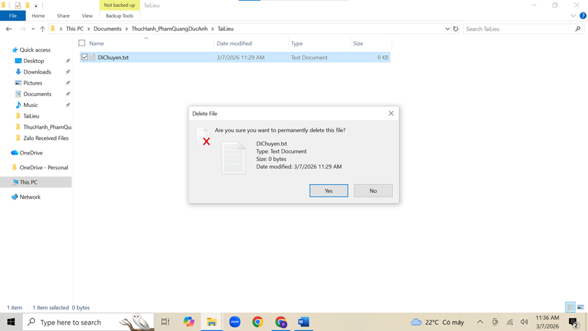
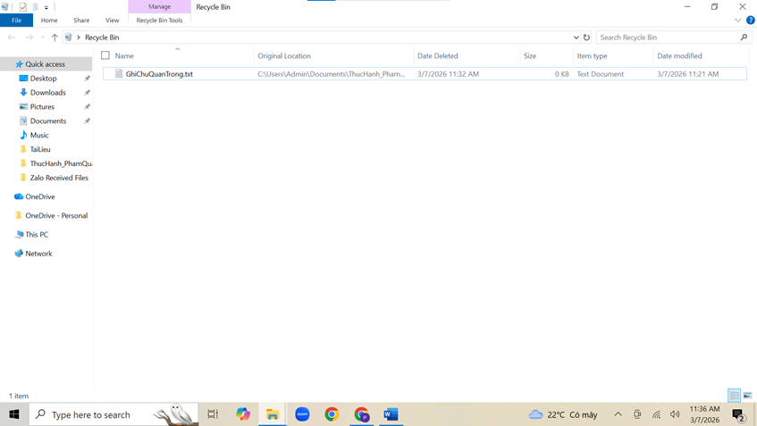
Tìm biểu tượng Recycle Bin trên màn hình nền, nhấp đúp để mở. Tìm tệp GhiChuQuanTrong.txt đã xóa, nhấp chuột phải vào nó và chọn Restore. Tệp sẽ quay trở lại vị trí ban đầu.
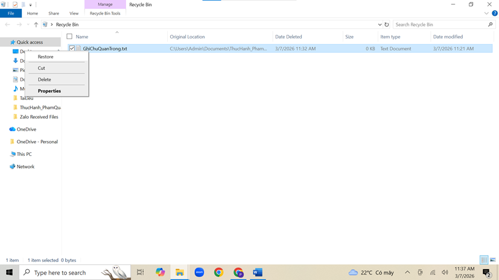
Bài tập 2 - Chương 2: Khai thác & Đánh giá
Thông tin Học
thuật Y khoa chuyên sâu
BỘ CHECKLIST PORTFOLIO NĂNG LỰC SỐ
Đối chiếu Rubric — Bài 2: Tìm kiếm & Đánh giá Thông tin Học thuật · 0/3 tiêu chí
MỤC LỤC - TIẾN TRÌNH KHAI THÁC LUẬN CỨ
MỤC TIÊU BÀI TẬP
Làm chủ kỹ năng khai thác và thẩm định nguồn thông tin học thuật y khoa qua các cơ sở dữ liệu chính thống (PubMed, Cochrane). Thành thạo thiết lập thuật toán tìm kiếm nâng cao (Boolean) và áp dụng tiêu chí kiểm chuẩn lâm sàng nghiêm ngặt để sàng lọc minh chứng phục vụ nghiên cứu Dược học.
1. CHỦ ĐỀ & PHẠM VI TÌM KIẾM HỌC THUẬT
Chủ đề nghiên cứu: Đánh giá hiệu quả giảm cân và tính an toàn của nhóm thuốc đồng vận thụ thể GLP-1 (đại diện tiêu biểu là Semaglutide) trong điều trị bệnh nhân béo phì hoặc thừa cân không mắc kèm đái tháo đường (ĐTĐ).
Phạm vi dữ liệu: Tập trung khai thác các thử nghiệm lâm sàng ngẫu nhiên có đối chứng quy mô lớn (RCT - đặc biệt là chuỗi chương trình nghiên cứu STEP), các tổng quan phân tích gộp (Meta-analysis) và hướng dẫn điều trị lâm sàng chính thức công bố trong giai đoạn từ 2021 đến 2026.
Để tối ưu hóa độ nhạy và độ đặc hiệu của kết quả truy vấn, ngăn ngừa hiện tượng nhiễu thông tin bởi dữ liệu bệnh đái tháo đường, công thức thuật toán logic nâng cao được thiết lập như sau:
Tiến trình thu thập minh chứng được định vị đa nguồn nhằm đảm bảo tính toàn diện bao gồm:
| Phân loại nguồn lực | Cơ sở dữ liệu & Tạp chí định vị mục tiêu |
|---|---|
| Cơ sở dữ liệu y khoa | PubMed, Cochrane Library |
| Tạp chí Y học hàng đầu | The New England Journal of Medicine (NEJM), JAMA, The Lancet |
| Sách chuyên khảo chuẩn | Pharmacotherapy: A Pathophysiologic Approach (DiPiro) – Giáo trình kinh điển Dược lâm sàng |
| Hiệp hội chuyên ngành | Hiệp hội Tiêu hóa Hoa Kỳ (AGA), Hiệp hội Béo phì (TOS), ClinicalTrials.gov |
Dưới đây là tổng hợp dữ liệu kiểm chuẩn và thẩm định chuyên sâu đối với các minh chứng lâm sàng cốt lõi trích xuất từ hệ thống tư liệu học thuật:
Nghiên cứu STEP 4 Randomized Clinical Trial (Tạp chí JAMA)
- Phương pháp: Nghiên cứu thử nghiệm lâm sàng ngẫu nhiên có đối đối chứng (RCT) quy mô lớn thiết lập đánh giá hiện tượng tăng cân trở lại sau khi can thiệp ngừng thuốc.
- Thẩm định học thuật: Nguồn bác sĩ lâm sàng và nhóm nghiên cứu độc lập chính danh, quy trình mù đôi nghiêm ngặt. Độ tin cậy dữ liệu chứng cứ: Rất cao (Mức độ 1).
Ghusn, W. et al. (2022) - Tạp chí JAMA Network Open
- Phương pháp: Thiết kế nghiên cứu thuần tập hồi cứu phân tích trên nền tảng cơ sở dữ liệu thực tế (Real-World Data).
- Thẩm định học thuật: Minh chứng bổ sung giá trị thực tiễn điều trị ngoài không gian thử nghiệm lâm sàng chuẩn hóa. Độ tin cậy dữ liệu chứng cứ: Cao.
Zhong, P. et al. (2024) - Tạp chí Obesity Research & Clinical Practice
- Phương pháp: Nghiên cứu quan sát lâm sàng cập nhật thực trạng kiểm soát cân nặng lâu dài của dược chất Semaglutide.
- Thẩm định học thuật: Tính cập nhật cực kỳ mới (Năm phát hành 2024), tạp chí chuyên khoa béo phì uy tín bình duyệt công khai. Độ tin cậy dữ liệu chứng cứ: Cao.
Hệ thống dữ liệu ClinicalTrials.gov (Cập nhật tiến trình 2026)
- Nội dung: Theo dõi tiến độ đăng ký các thử nghiệm lâm sàng pha mới thuộc chương trình nghiên cứu quốc tế OASIS (Đánh giá hoạt chất Semaglutide hàm lượng cao đường uống).
- Thẩm định học thuật: Kho lưu trữ quản lý chính thống công khai của Viện Y tế Quốc gia Hoa Kỳ (NIH), mang giá trị cốt lõi định hướng xu thế phát triển bào chế tương lai.
Bài tập 3 - Tối ưu hóa tương tác AI
qua Kỹ nghệ Viết
Prompt Hiệu quả
BỘ CHECKLIST PORTFOLIO NĂNG LỰC SỐ
Đối chiếu Rubric — Bài 3: Kỹ nghệ Prompt AI · 0/3 tiêu chí
MỤC LỤC - KỸ NĂNG PROMPTING
MỤC TIÊU BÀI TẬP
Thấu hiểu bản chất logic và tối ưu hóa hiệu quả tương tác với AI tạo sinh thông qua kỹ nghệ Prompt Engineering. Thành thạo quy chuẩn thiết kế câu lệnh cấu trúc sâu (Quy tắc 5S, kỹ thuật tạo giàn giáo kiến thức Scaffolding) để xử lý hiệu quả các tác vụ tóm tắt tài liệu và làm chủ lý thuyết khoa học máy tính trừu tượng.
- Bản chất: Tác vụ xử lý thông tin phức tạp, yêu cầu đọc, hiểu, phân tích và rút gọn nội dung chuyên ngành Học tăng cường (Reinforcement Learning).
- Thách thức: Tài liệu chứa nhiều thuật ngữ toán học và logic trừu tượng (Agent, Environment, Reward Function, Policy) khiến người mới học dễ bị ngợp.
- Mục tiêu Prompt: Tóm tắt ngắn gọn nhưng đầy đủ ý chính, phân tách rõ ràng các thành phần cốt lõi của thuật toán để dễ nhớ.
- Bản chất: Thuật toán cốt lõi giúp Mạng nơ-ron (Neural Network) "học" từ dữ liệu bằng cách điều chỉnh trọng số dựa trên sai số.
- Thách thức: Khái niệm trừu tượng, nặng về toán học vi phân và đạo hàm hàm hợp (Chain rule).
- Mục tiêu Prompt: Yêu cầu AI dùng ngôn từ đời thường (ví dụ: dây chuyền làm bánh) để tạo "giàn giáo" kiến thức (Scaffolding), biến công thức phức tạp thành hành vi dễ hiểu.
Tư duy giải thích đáp án: Prompt cần yêu cầu AI không chỉ đưa ra câu hỏi mà phải giải thích chi tiết logic của phương án đúng, đồng thời nhận diện "bẫy" trong các phương án sai. Gắn liền lý thuyết vào tình huống (Scenario-based) như sự chênh lệch độ chính xác giữa tập Train và Test để người học buộc phải Vận dụng thay vì học thuộc.
TỔNG HỢP NGUYÊN TẮC VIẾT PROMPT (QUY TẮC 5S)
Bài tập 4 - Kỹ năng Quản trị &
Sử dụng công cụ hợp tác
trực tuyến
BỘ CHECKLIST PORTFOLIO NĂNG LỰC SỐ
Đối chiếu Rubric — Bài 4: Công cụ hợp tác trực tuyến · 0/3 tiêu chí
MỤC LỤC - QUY TRÌNH HỢP TÁC NHÓM
MỤC TIÊU BÀI TẬP
Phát triển năng lực tổ chức, phân phối và cộng tác nhóm trên không gian làm việc số. Làm chủ hệ sinh thái đám mây khép kín kết hợp chặt chẽ giữa mô hình quản trị tiến độ trực quan Kanban (Trello), thực thi tài liệu thời gian thực (Google Workspace) và kết nối giao tiếp để tối ưu hóa năng suất giải quyết case lâm sàng phức tạp.
I. TỔNG QUAN DỰ ÁN
Tên dự án: Phân tích case lâm sàng tăng huyết áp.
Hệ sinh thái công cụ sử dụng: Trello (Quản trị tiến độ), Google Docs & Drive (Lưu trữ và thực thi), Google Meet & Zalo (Giao tiếp và kết nối).
II. QUY TRÌNH THỰC HIỆN
- Lập nhóm Zalo: Khởi tạo nhóm chat chuyên trách để duy trì luồng thông tin nhanh chóng giữa các thành viên.
- Tạo bảng Trello (Kanban): Lên cấu trúc phân chia công việc chi tiết, gắn thẻ (tag) thành viên và thiết lập Deadline (hạn nộp) cụ thể để theo dõi tiến độ rõ ràng.
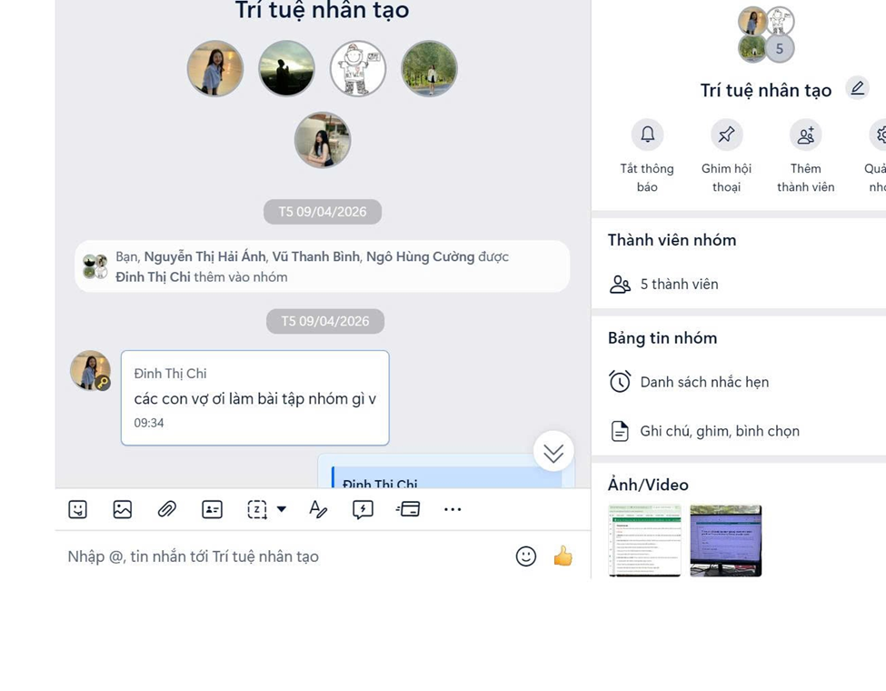
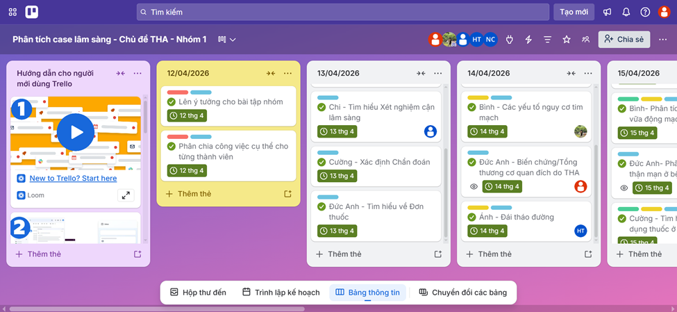
Tiến trình công việc được theo dõi xuyên suốt từ ngày 12/4 đến 19/4:
13/4 - 17/4: Cá nhân hoàn thiện các module chuyên môn được giao.
18/4: Thảo luận nhóm để thống nhất và kiểm duyệt chéo.
19/4: Trình bày báo cáo, tổng kết dự án.
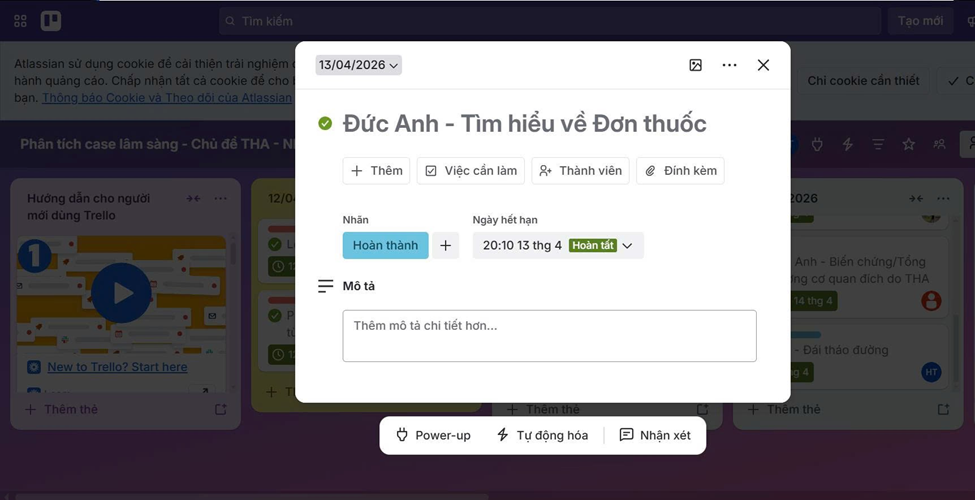
- Họp Google Meet: Đồng chỉnh sửa trên Google Docs và tranh luận trực tiếp để giải quyết các vướng mắc lâm sàng.
- Google Drive: Lưu trữ tập trung toàn bộ tài liệu tham khảo, slide báo cáo và biên bản cuộc họp.
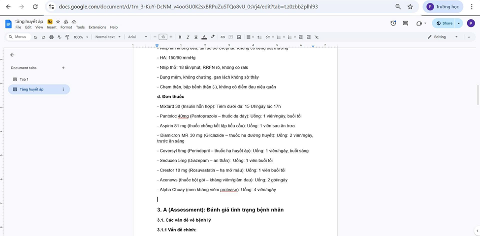
III. PHẢN BIỆN & ĐÁNH GIÁ CÔNG CỤ
Zalo (Nền tảng giao tiếp)
Điểm mạnh: Tốc độ nhanh. Tính năng "Ghim" giúp bảo toàn link Trello/Drive. Tính năng "Bình chọn" giúp chốt phương án cực kỳ hiệu quả.
Thách thức: Tin nhắn trôi nhanh do chat ngoài lề. Cảnh báo thông báo nổ liên tục gây xao nhãng.
Google Meet (Họp trực tuyến)
Điểm mạnh: Tính năng chia sẻ màn hình xuất sắc giúp trình bày trực quan bản nháp Docs để cả nhóm thống nhất.
Thách thức: Khó sắp xếp lịch chung. Mạng đôi lúc không ổn định. Một số bạn tắt camera, ít tương tác.
IV. TỔNG KẾT BÀI HỌC
Sau 1 tuần thực hiện dự án, việc áp dụng đồng bộ 5 công cụ này đã chuyển đổi phong cách làm việc nhóm từ "phản ứng thụ động" sang "quản lý chủ động".
Bài học cốt lõi là việc xây dựng một hệ sinh thái làm việc khép kín: Trello (Lên kế hoạch) Google Docs/Drive (Thực thi) Zalo/Meet (Kết nối). Không có công cụ nào hoàn hảo, chỉ có cách người dùng làm chủ và khắc phục nhược điểm của chúng mới tạo ra hiệu suất thực sự.
Bài tập 5 - AI Tạo sinh trong Sáng tạo nội dung
và Quy
chuẩn Đạo đức Học thuật
BỘ CHECKLIST PORTFOLIO NĂNG LỰC SỐ
Đối chiếu Rubric — Bài 5: Sử dụng AI có trách nhiệm · 0/3 tiêu chí
MỤC LỤC - TIẾN TRÌNH THỰC HIỆN
MỤC TIÊU BÀI TẬP
Ứng dụng đột phá mô hình AI tạo sinh văn bản và hình ảnh vào quy trình sáng tạo nội dung báo chí học thuật chuyên nghiệp. Nhận diện sâu sắc sự dịch chuyển vai trò cá nhân sang nhà quản trị và biên tập chiến lược, đồng thời thấu suốt trách nhiệm kiểm chuẩn rủi ro ảo giác (Hallucination) để bảo vệ tính chân thực của thông tin.
1. TỔNG QUAN CHỦ ĐỀ SÁNG TẠO
Chủ đề bài báo: Xu hướng Tiêu dùng Xanh của Gen Z tại Việt Nam: Trào lưu hay Sự chuyển dịch bền vững?
Mục tiêu: Sử dụng AI tạo sinh làm trợ lý nghiên cứu để tìm ra các góc nhìn xã hội học đa chiều, đi ngược lại đám đông để tăng chiều sâu cho bài viết.
TRIỂN KHAI VÀ ĐÁNH GIÁ CHUYÊN SÂU
Cấu trúc Prompt thiết lập:
Kết quả phân tích từ AI:
- Phân tầng xã hội mới: Gen Z chọn "xanh" không chỉ vì môi trường mà còn vì địa vị (vốn văn hóa). Một chiếc túi vải hay ly cà phê eco-friendly trở thành tín hiệu giai cấp trên mạng xã hội.
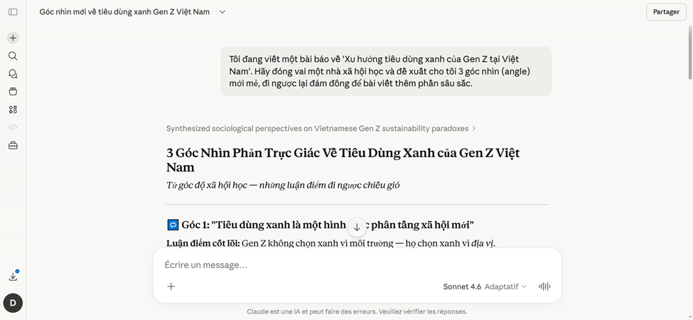
Trải nghiệm thực tế cho thấy AI sở hữu tư duy logic xuất sắc khi thiết lập dàn ý. Tuy nhiên, AI bộc lộ rõ điểm yếu về sự thiếu hụt hơi thở thực tế và tính địa phương hóa. Văn bản thiếu đi cảm xúc trải đời, trong khi hình ảnh (như từ Midjourney) lại mang vẻ đẹp quá hoàn mỹ, làm mất đi tính thô mộc chân thực của báo chí.
Sự tham gia của AI đặt ra những vấn đề đạo đức không thể phớt lờ trong môi trường học thuật và báo chí:
- Tính minh bạch & Dán nhãn: Là yếu tố tiên quyết. Mọi hình ảnh đồ họa sinh ra từ AI cần được dán nhãn "Ảnh minh họa tạo bởi AI" để tránh việc đánh lừa cảm nhận và niềm tin của độc giả.
- Rủi ro Ảo giác AI (Hallucination): Khi máy móc tự bịa ra các số liệu khảo sát người tiêu dùng, nó nhắc nhở một nguyên tắc bất di bất dịch: AI chỉ là công cụ hỗ trợ, trách nhiệm kiểm chứng sự thật (Fact-checking) luôn thuộc về con người.
Bài tập 6 - Báo cáo Nghiên cứu: Sử dụng AI
có Trách nhiệm
và Đạo đức trong Học thuật
BỘ CHECKLIST PORTFOLIO NĂNG LỰC SỐ
Đối chiếu Rubric — Bài 6: Đạo đức & Trách nhiệm số · 0/3 tiêu chí
MỤC LỤC - NỘI DUNG NGHIÊN CỨU
MỤC TIÊU BÀI TẬP
Xây dựng tư duy công nghệ chuẩn mực thông qua nghiên cứu chính sách quản trị học đường về trí tuệ nhân tạo. Nhận diện tường minh ranh giới đạo đức giữa hỗ trợ học tập và hành vi gian lận (AI-giarism), cam kết thực thi nghiêm túc bộ 6 nguyên tắc đạo đức cốt lõi để duy trì tính liêm chính tri thức của một "Sinh viên số".
I. CHÍNH SÁCH ĐẠI HỌC VỀ ỨNG DỤNG AI
Trong bối cảnh các mô hình ngôn ngữ lớn (LLMs) như ChatGPT, Gemini, Claude phát triển vượt bậc, việc đưa ra những hướng dẫn và quy định cụ thể nhằm quản lý việc ứng dụng AI trong học thuật là xu hướng tất yếu. Chính sách quản trị học đường được thiết lập vững chắc vững dựa trên ba trụ cột cốt lõi: Liêm chính – Minh bạch – Trách nhiệm.
II. PHÂN ĐỊNH KHUÔN KHỔ HÀNH VI CHUẨN MỰC
- Ý tưởng và cấu trúc: Cho phép sinh viên sử dụng AI để động não (brainstorming) đề tài, tìm kiếm từ khóa nghiên cứu, dựng đề cương chi tiết cho bài luận hoặc bài thuyết trình học thuật.
- Sửa lỗi và tối ưu ngôn ngữ: Sử dụng AI để rà soát lỗi chính tả, ngữ pháp, tối ưu hóa câu từ đối với các bài viết bằng ngoại ngữ hoặc thuật ngữ chuyên ngành sâu.
- Tìm kiếm và tóm tắt: Sử dụng công nghệ để tóm tắt nhanh các bài báo khoa học dài nhằm nắm bắt bản chất luận điểm chính trước khi đi sâu vào đọc toàn văn tài liệu gốc.
- Đạo văn công nghệ (AI-giarism): Nghiêm cấm tuyệt đối hành vi sao chép nguyên văn các đoạn văn hoặc toàn bộ văn bản do AI tạo ra để nộp làm bài tập, bài kiểm tra hoặc khóa luận tốt nghiệp mà không khai báo rõ ràng.
- Ủy thác tư duy: Lạm dụng AI để giải quyết toàn bộ các bài toán logic hoặc viết code thay thế hoàn toàn cho quá trình tự học, làm mất đi tư duy phản biện độc lập của sinh viên.
III. 6 NGUYÊN TẮC ĐẠO ĐỨC CỐT LÕI CỦA "SINH VIÊN SỐ"
Không sử dụng trực tiếp số liệu hay nguồn trích dẫn do AI cung cấp mà chưa đối chiếu trực tiếp với các nguồn học thuật uy tín (Google Scholar, Thư viện trường). AI chỉ là "Cơ phó" hỗ trợ hành trình.
Luôn luôn thực hiện khai báo trung thực, rõ ràng phần nội dung hoặc ý tưởng nào có sự hỗ trợ, gợi ý hoặc tối ưu hóa từ công nghệ AI trong mọi bài tập nộp về.
Tuyệt đối không sao chép nguyên văn câu chữ mang tính máy móc của AI. Mọi ý tưởng nhận được phải được bộ não người học tiêu hóa, phân tích và diễn đạt lại bằng văn phong của chính mình.
Không dùng AI để bỏ qua các giai đoạn tư duy cốt lõi. Bản thân người học phải tự hiểu thấu đáo bản chất của vấn đề chuyên môn trước khi nhờ công nghệ tối ưu hóa cấu trúc của nó.
Tuyệt đối bảo mật dữ liệu học thuật. Không tải lên các mô hình AI công cộng những tài liệu lưu trữ nội bộ của nhà trường, bài làm chưa công bố của giảng viên hoặc thông tin riêng tư của bạn học.
Ý thức rõ con người đóng vai trò kiểm chuẩn và chịu trách nhiệm pháp lý cao nhất đối với nội dung bài nộp, giữ vững ranh giới giữa kiểm soát công cụ và bị công cụ kiểm soát.
IV. TRỰC QUAN HÓA & KẾT LUẬN CHIẾN LƯỢC
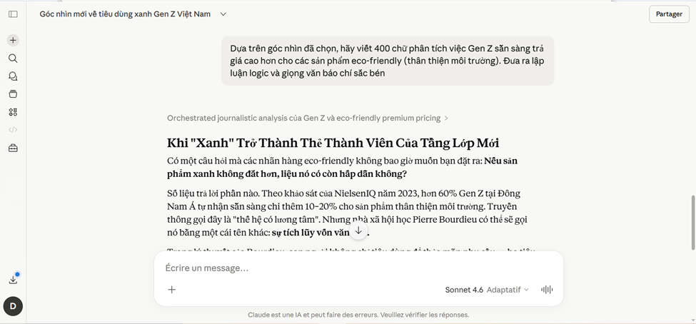
Kết luận chiến lược: Việc sử dụng AI trong học tập và nghiên cứu là xu thế tất yếu của giáo dục hiện đại. Tuy nhiên, để AI thực sự phát huy đúng giá trị của một trợ lý thông minh, người học cần có nhận thức đúng đắn, sử dụng AI một cách có trách nhiệm, đạo đức và minh bạch. Báo cáo này định hình một tư duy vững vàng giúp "Sinh viên số" làm chủ công nghệ thay vì để công nghệ thay thế tư duy.
TỔNG KẾT & SUY NGẪM
Đúc kết chặng đường rèn luyện và xây dựng tư duy "Dược sĩ số" vững vàng.
BỘ CHECKLIST PORTFOLIO NĂNG LỰC SỐ (VNU1001)
Đối chiếu Rubric — Trang Tổng kết · 0/3 tiêu chí
Tổng kết và đánh giá bản thân
MỨC 4 — 1 ĐIỂMTrọng tâm: Sự trưởng thành và định hướng tương lai.
0/3 tiêu chí đã đối chiếu